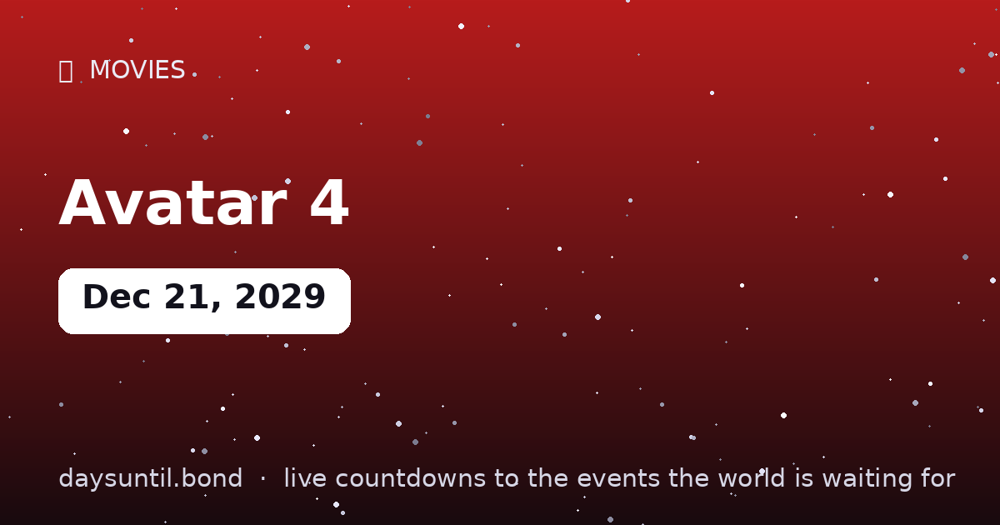

How Many Days Until Avatar 4?
–days
–hours
–minutes
–seconds
Avatar 4 falls on Friday, December 21, 2029.
📅 – weeks
💼 – weekdays
🛌 – weekend days
🗓️ – months (approx)

Quick facts
| Date | Friday, December 21, 2029 |
|---|---|
| Days away | Live counter above |
About Avatar 4
James Cameron's next chapter of Pandora, currently scheduled for December 21, 2029 — because Cameron plans in decades, not release windows.
The longest-range countdown on this site. The live counter above runs to the release/event date worldwide (local time zones may shift availability by hours).